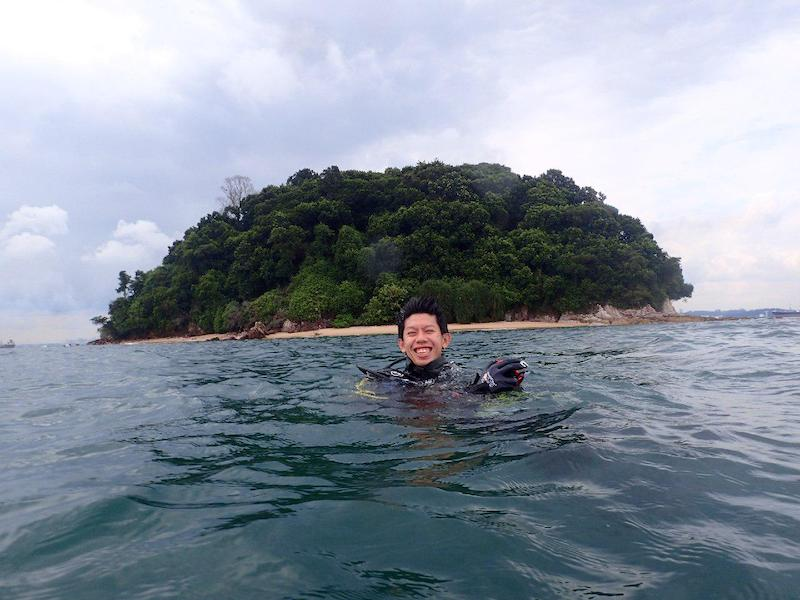

|  | Samuel CHANPhD Student
Email: samuelc(AT)u.nus.edu |
Background
I graduated from the Bachelor of Environmental Studies at the National University of Singapore in 2016. My honours thesis looked at the spatial and temporal differences in Archaster typicus in Singapore. My current research interests are in the field of community ecology, particularly looking at trends across time and space and examining the factors that drive these changes.
Current Research
My current research seeks to investigate the geological and ecological history of coral reefs in Singapore using a variety of approaches. We core the living reef flats to obtain coral reef cores that lets us examine how the reef communities and sedimentary layers have changed over time. I also look at living communities of coral reefs in Singapore through surveys, and compare these to past surveys using different measures of diversity. Together, these also allow me to compare assemblages of the modern day coral reef in Singapore against those of the past generated from the coral reef cores. Finally, aside from working on Singapore's reefs, I am also involved in the Global Coral Reef Monitoring Network East Asia node, where we attempt to elucidate larger regional scale patterns from the reefs in the whole of North and Southeast Asia through past surveys and try to determine the potential causes.
Together, my research aims to look at how changes in coral reefs across different temporal and spatial scales can help to better inform on a historical baseline and using these to guide management in the present and into the future.